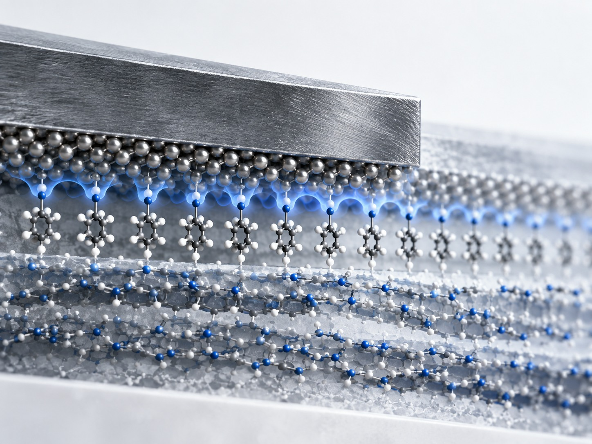
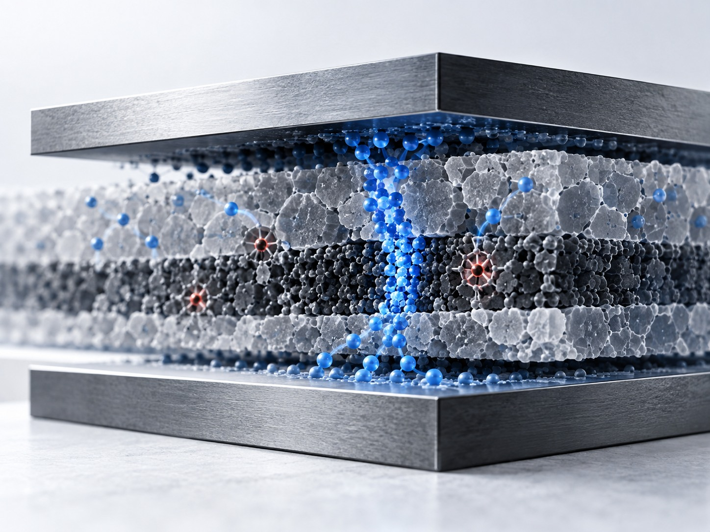
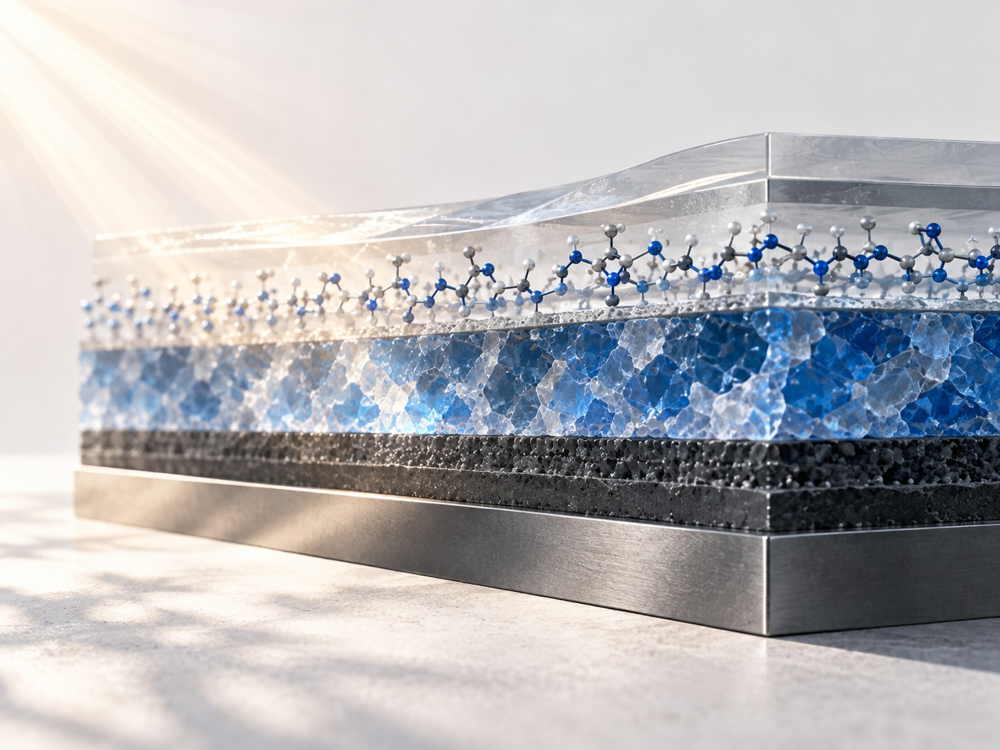
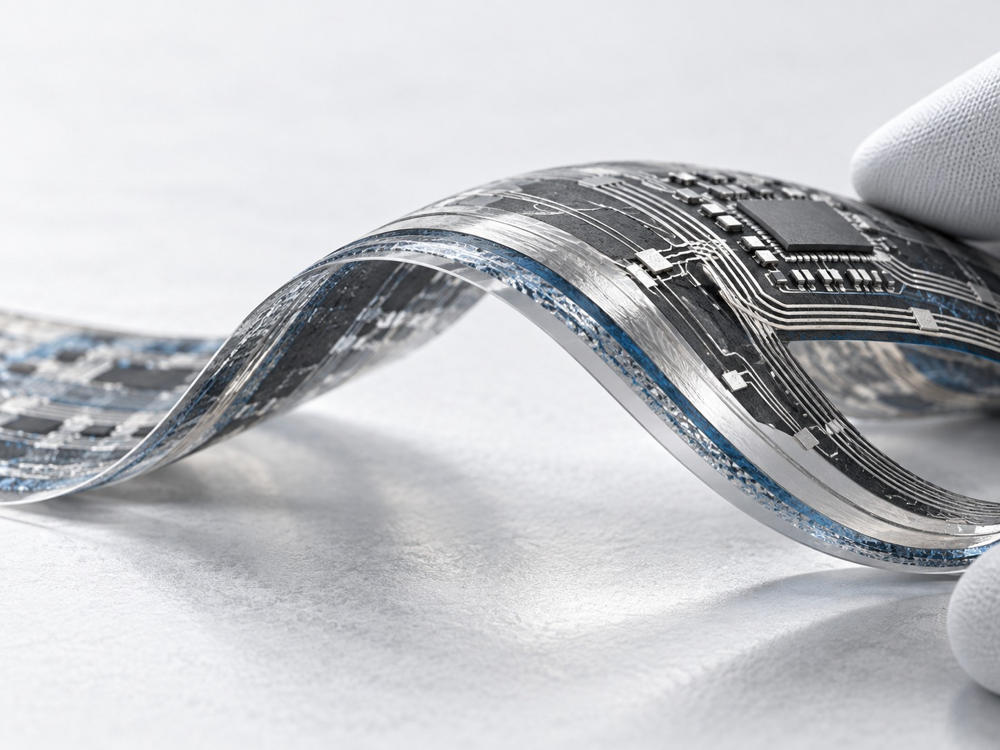

Research
From interfaces to integrated electronic systems.
My work examines interfaces, defects, ionic dynamics, and charge transport in memory and optoelectronic devices, alongside flexible electronics R&D.
reliability
hybrid devices
stretchable electronics
Core science
Interfaces · Defects · Ions · Transport

How do molecular-scale interfaces and defects reshape electronic and ionic energy landscapes?
An electronic device is often governed by a small fraction of its material: the interface, the defect, or the pathway an ion can access. Understanding these local environments offers a route from chemical structure to device function.
Published foundation. Published work spans SAM-based hole-selective contacts, intermediate-layer-assisted trap reduction, and hydrogen-bond-driven artificial synapses.
Methods. Self-assembled monolayers · Thin-film interface engineering · Electrical characterization · Charge-transport / trap analysis
Device platform
Memory & reliability

How can interfacial and defect physics be used to understand and control memory variability and reliability?
Variability can limit precision and reliability in memory devices. Understanding the roles of interfaces, defects, and ionic motion can help explain how device states form and change.
Published work. First-author studies address linear and symmetric artificial synapses and low-power optoelectronic memristors. Collaborative work also investigates the ionic landscape in perovskite memristors.
Current research. My current focus includes low-power switching, variability, and reliability in memristors. Earlier work also includes MIM capacitors, dielectric and electrode interfaces, leakage control, and thin-film stack integration.
Methods. I–V / C–V measurements · Pulse measurements · Trap analysis · Interface / electrode engineering
Selected papers
- Linear and Symmetric Artificial Synapses Driven by Hydrogen Bonding for Accurate and Reliable Neuromorphic ComputingAdvanced Materials · 2025
- Intermediate Layer-Assisted Trap Density Reduction in Low-Power Optoelectronic Memristors for Multifunctional SystemsAdvanced Functional Materials · 2025
Device platform
Optoelectronics & hybrid devices

How do contacts and traps shape light conversion and detection?
Organic and hybrid devices provide a continuing platform for examining molecular contacts, thin-film electrodes, and charge-selective interfaces.
Published work. First-author papers address self-assembled contacts and ALD oxide electrodes; collaborative work includes photodetectors and hybrid materials.
Methods. SAM functionalization · ALD thin films · Interface energetics · Electrical / optical characterization.
Platforms. Organic photovoltaics · Photodetectors · Capacitive devices.
Selected papers
- Tailoring Hole-Selective Contacts via Self-Assembled Monolayers for advancing Indoor Organic Photovoltaic and Capacitor DevicesChemical Engineering Journal · 2024
- Atomic layer deposition-processed laminated In2O3:V2O5 nanocompounds: Versatile electrode platforms for high-performance organic photovoltaics and capacitor deviceJournal of Alloys and Compounds · 2023
Device platform
Flexible & stretchable electronics

How can electronic materials and interconnects remain functional under bending and stretching?
Research experience includes flexible interconnects, stretchable PCB technologies, and mechanically robust films in deformable electronic systems.
These programs extend my device research toward transport and reliability under mechanical deformation.
Long-term direction
Integrated electronic systems
How can emerging thin-film and electronic-device platforms be integrated into scalable, multifunctional electronic systems?
Existing foundation. Established work includes ALD-processed In₂O₃:V₂O₅ laminated electrodes for photovoltaic and capacitor devices. Thin-film process integration and electrical measurements provide a foundation for examining device nonidealities.
Possible directions. Low-temperature oxide electronics, heterogeneous and 3D integration, device–system co-design, and integrated memory, sensing, and optoelectronics.